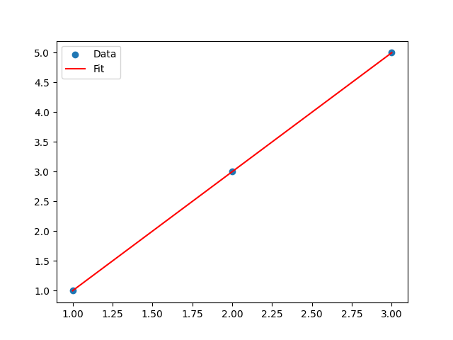

Note
Click here to download the full example code
Simple Fitting Example
This example demonstrates a simple fitting procedure using :class:easyscience.fitting.Fitter.
import numpy as np
import matplotlib.pyplot as plt
from easyscience.fitting import Fitter
from easyscience.base_classes import ObjBase
from easyscience.variable import Parameter
Define the Model
We define a simple linear model with parameters m (slope) and c (intercept).
class Line(ObjBase):
def __init__(self, m: Parameter, c: Parameter):
super().__init__('line', m=m, c=c)
def __call__(self, x):
return self.c.value + self.m.value * x
# Initialize parameters
m = Parameter('m', 1)
c = Parameter('c', 1)
b = Line(m, c)
Define the Fitting Function
The fitting function takes the independent variable x and returns the model prediction.
Setup the Fitter
Initialize the Fitter with the model object and the fitting function.
Generate Data
Create some synthetic data to fit.
x = np.array([1, 2, 3])
y = np.array([2, 4, 6]) - 1
# x=1, y=1. x=2, y=3. x=3, y=5.
# Expected result: m=2, c=-1.
Perform Fit
Run the fit.
# We need to provide weights for the fit. Since we don't have experimental errors, we use equal weights.
weights = np.ones_like(x)
f_res = f.fit(x, y, weights=weights)
print(f'Goodness of fit (chi2): {f_res.chi2}')
print(f'Reduced chi2: {f_res.reduced_chi}')
print(f'Fitted m: {b.m.value}')
print(f'Fitted c: {b.c.value}')
Out:
Goodness of fit (chi2): 7.888609052210118e-31
Reduced chi2: 7.888609052210118e-31
Fitted m: 1.9999999999999998
Fitted c: -0.9999999999999997
Plot Results
plt.scatter(x, y, label='Data')
plt.plot(x, fit_fun(x), label='Fit', color='red')
plt.legend()
plt.show()

Total running time of the script: ( 0 minutes 2.494 seconds)
Download Python source code: plot_fitting1.py